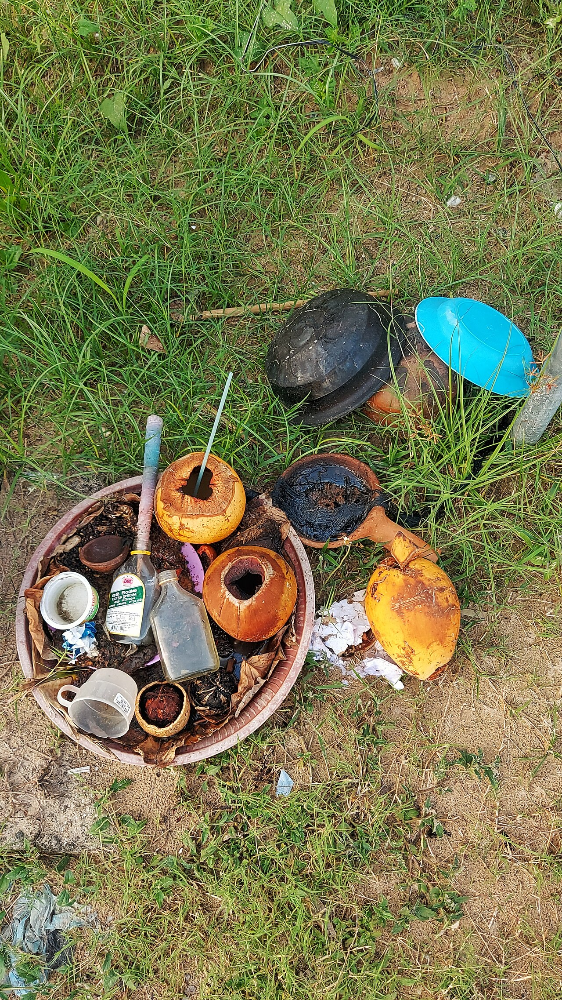
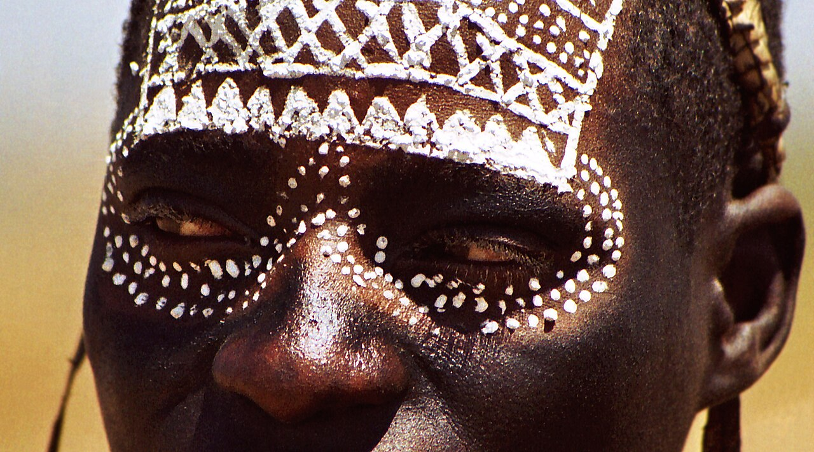
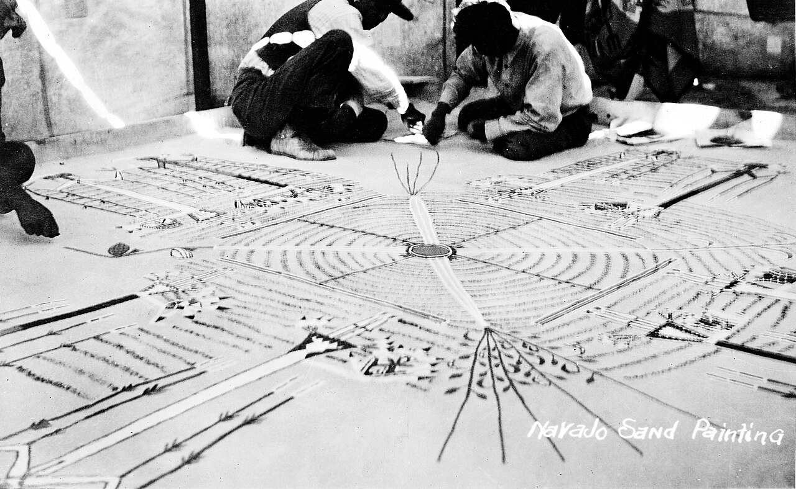

Religion, Ritual & Belief
Every human society yet described has something anthropologists are willing to call religion — and no two societies mean quite the same thing by it. Some address a single creator; some address the dead, the mountain, the ancestors in the roof beam. Some assign the work to a full-time priesthood trained for decades; some hand it to a woman who fell ill at nineteen, was cured by a spirit, and has been drumming ever since. This chapter is not about which of those claims is true — anthropology brackets that question entirely — but about what religious life does: how it is defined, who is authorized to perform it, how ritual moves people from one social identity to another, how misfortune gets explained, and how myth and cosmology assemble the world a person lives inside.
By the end of this chapter you can
- Compare the major anthropological definitions of religion — Tylor's, Durkheim's, Wallace's, and Geertz's — and explain why none of them fully satisfies.
- Explain why anthropology studies religion using emic and etic perspectives and methodological agnosticism rather than adjudicating truth claims.
- Distinguish a shaman from a priest and relate Wallace's four cult institutions to band, tribe, chiefdom, and state.
- Define ritual and distinguish rites of passage from rites of intensification.
- Apply van Gennep's three phases — separation, transition, incorporation — and Turner's concepts of liminality and communitas to a real ceremony.
- Describe Frazer's laws of sympathetic magic and evaluate Malinowski's anxiety theory of magic.
- Distinguish witchcraft from sorcery using Evans-Pritchard's Azande ethnography, and explain what witchcraft accusations do socially.
- Explain how myth, cosmology, and worldview differ, and describe syncretism and revitalization movements as forms of religious change.
Section 1Defining religion

Why the definition is the hard part
Most fields begin with a clean definition and proceed. The anthropology of religion begins with an argument that has never been settled, and the argument is itself instructive. The trouble is that the English word religion carries freight from a particular history — congregations, scriptures, creeds, a separate institution with its own buildings and its own professionals. Carry that word into a Ju/'hoansi camp in the Kalahari or a Tsembaga Maring settlement in highland New Guinea and it will not fit: there is no membership, no scripture, no clergy, and frequently no word that separates "religious" activity from ordinary life. Anthropologists therefore build definitions that travel.
The first serious attempt was Edward Burnett Tylor's, in Primitive Culture (1871). Tylor proposed a deliberately minimal definition — religion is "the belief in spiritual beings" — and named the underlying idea animism: the attribution of a soul or spirit to persons, animals, plants, and features of the landscape. Tylor's definition is portable, but it is thin. It captures belief and ignores practice, and it excludes traditions built around impersonal power rather than beings, such as Polynesian and Melanesian mana, which R. R. Marett called animatism.
Émile Durkheim shifted the ground entirely in The Elementary Forms of Religious Life (1912). Working from ethnographic reports of Aboriginal Australian totemism, Durkheim argued that religion is not fundamentally about gods at all but about the division of the world into the sacred — set apart, protected by prohibition — and the profane, the ordinary. Religion, in his famous formulation, is a unified system of beliefs and practices relative to sacred things which unites adherents into a single moral community. What people worship, he claimed, is society itself in symbolic dress; the electric feeling of a gathered congregation, which he called collective effervescence, is society made perceptible. Durkheim's account is powerful and reductive in equal measure, and no serious student of religion has been able to ignore it since.
Later definitions: function and meaning
Two more definitions dominate current teaching. Anthony F. C. Wallace offered a workable etic definition — religion is a set of rituals, rationalized by myth, that mobilizes supernatural powers for the purpose of achieving or preventing transformations of state in people and nature. It is clunky, but it puts ritual first, which matches what ethnographers actually watch people do. Clifford Geertz, in "Religion as a Cultural System" (1966), went the other way and defined religion as a system of symbols that establishes powerful, pervasive, and long-lasting moods and motivations by formulating conceptions of a general order of existence and clothing those conceptions in such an aura of factuality that the moods and motivations seem uniquely realistic. Geertz's definition is about meaning: religion works because it makes suffering, injustice, and confusion intelligible rather than merely unbearable.
| Theorist | Key work | Religion is… | Strength / limitation |
|---|---|---|---|
| E. B. Tylor | Primitive Culture (1871) | Belief in spiritual beings (animism) | Portable and minimal; ignores practice and impersonal power |
| R. R. Marett | The Threshold of Religion (1909) | Sense of impersonal sacred force (animatism, mana) | Captures mana; hard to observe directly |
| Émile Durkheim | Elementary Forms (1912) | Practices around the sacred that bind a moral community | Explains solidarity; reduces the divine to society |
| Bronisław Malinowski | "Magic, Science and Religion" (1925; collected 1948) | A response to human anxiety and existential need | Grounded in fieldwork; understates social power |
| A. F. C. Wallace | Religion: An Anthropological View (1966) | Ritual rationalized by myth, mobilizing supernatural power | Observable and comparative; inelegant |
| Clifford Geertz | "Religion as a Cultural System" (1966) | A system of symbols producing moods, motivations, and an order of existence | Explains meaning; hard to falsify or measure |
What anthropologists actually do
Whatever definition is adopted, the method is consistent. Anthropologists study religion through participant observation, describing what practitioners believe and do in the practitioners' own terms — the emic account — and then setting those descriptions in comparative, analytic frames that no practitioner would use — the etic account. Both are required. An emic-only account cannot compare Azande witchcraft to Salem witchcraft; an etic-only account so thoroughly translates a tradition into outside categories that the people who live it would not recognize themselves in it.
Crucially, anthropology proceeds by methodological agnosticism. Whether spirits exist is not an anthropological question and not an anthropological finding. What is observable, and therefore studiable, is that people organize marriage, planting, healing, warfare, mourning, and moral judgement around such claims — and that these arrangements have consequences we can document. This posture descends from Franz Boas, whose insistence on cultural relativism and historical particularism dismantled the armchair evolutionary schemes of the nineteenth century, in which "primitive" magic supposedly matured into religion and then into science. Boas's students went to live with people instead, and the ranked ladder collapsed under the weight of the evidence.
- No single definition of religion works cross-culturally; the leading candidates emphasize belief (Tylor), the sacred and social solidarity (Durkheim), ritual and supernatural power (Wallace), or symbols and meaning (Geertz).
- Animism attributes spirit to beings and things; animatism (mana) describes impersonal sacred force.
- Anthropologists combine emic and etic perspectives through participant observation, and practice methodological agnosticism about truth claims.
- Boas and cultural relativism replaced nineteenth-century magic–religion–science evolutionary ladders with fieldwork-based description.
Section 2Religious specialists
The shaman
The word shaman is not a generic label invented by scholars; it comes from šaman in Evenki, a Tungusic language of Siberia, and reached European languages through Russian accounts of Siberian practice in the seventeenth century. It has since been stretched to cover part-time religious specialists worldwide, and the stretching deserves care: a Mongolian böö, a Korean mudang, a Ju/'hoansi healer, and a Yanomami shabori are not the same office, and calling all of them shamans risks flattening real differences.
Still, a recognizable pattern recurs. The shaman is typically a part-time specialist who also hunts, herds, farms, or keeps a household. Authority is charismatic rather than institutional: it rests on demonstrated personal contact with the spirit world, often inaugurated by an unsought crisis — a grave illness, a seizure, a vision — interpreted as a spirit's call, followed by apprenticeship to an established practitioner. The work is usually done in an altered state of consciousness induced by drumming, dancing, fasting, or plant preparations, and its purposes are concrete and client-driven: curing an illness, recovering a lost soul, locating game, identifying the source of a misfortune. Mircea Eliade's phrase, "archaic techniques of ecstasy," names the method even where his broader historical claims have been criticized. Among the Ju/'hoansi of the Kalahari, healers activate n/um in an all-night trance dance and lay hands on everyone present, a communal event rather than a private consultation; among Korean mudang, overwhelmingly women, the kut ritual negotiates with the angry dead on behalf of a family.
The priest
A priest is a different social animal. Priesthood is a full-time office, entered through formal training and appointment rather than personal revelation, and the authority belongs to the office rather than to the person occupying it — which is precisely why a priest who is uninspired, or even disliked, can still perform a valid ritual. Priests tend to conduct a fixed calendrical cycle of rites on behalf of the whole community rather than responding to individual crises, they work from a body of memorized or written liturgy, and they are typically organized into a hierarchy. Historically, priesthoods appear where a society can support specialists who do not produce their own food: they are strongly associated with agricultural surplus, social stratification, and state or chiefdom organization — the Vedic Brahmins of South Asia, the Classic Maya priesthood tracking a ritual calendar from temple platforms, and the Catholic clergy are all examples.
| Dimension | Shaman | Priest |
|---|---|---|
| Employment | Part-time; also a producer | Full-time specialist |
| Source of authority | Charismatic — personal spirit contact | Institutional — the office itself |
| Recruitment | Call, crisis, vision; then apprenticeship | Formal training, examination, appointment |
| Technique | Altered state, trance, soul journey | Prescribed liturgy, learned text |
| Timing | On demand — a crisis brings the client | Calendrical — the date brings the rite |
| Clientele | Individual or household | Whole congregation or polity |
| Typical society | Bands and tribes; foragers, horticulturalists | Chiefdoms and states; agriculturalists |
| Examples | Evenki and Darkhad shamans, Korean mudang, Ju/'hoansi healers | Brahmins, Maya priests, Catholic clergy |
Wallace's four cult institutions
Wallace organized these specialists into a cumulative scheme of cult institutions — not a ladder of progress, but an observation that societies of greater scale add forms rather than replacing them. Individualistic cults require no specialist at all: a Plains vision quest, a private offering, a personal guardian spirit. Shamanic cults add the part-time specialist. Communal cults add rites performed by non-specialist groups — a lineage tending its ancestors, an age set staging an initiation, a men's or women's association such as the Duk-Duk society of the Tolai in New Britain. Ecclesiastical cults add the full-time priesthood and its bureaucracy. Laid against political organization, the rough pattern runs: bands hold individualistic and shamanic cults; tribes add communal cults tied to lineages, age sets, and associations; chiefdoms and states add the ecclesiastical layer, since only they can support specialists released from food production. The correlation with political scale is real but loose, and the categories are additive: a modern state contains ecclesiastical institutions and communal rites and shamanic healers and entirely private devotions, all at once.
- Shamans are part-time, charismatic specialists who work in altered states for individual clients, typically in bands and tribes.
- Priests hold full-time institutional office, are formally trained, and perform calendrical rites for a whole community — typical of chiefdoms and states.
- The word shaman comes from Evenki (Siberia); applying it globally requires care.
- Wallace's cult institutions — individualistic, shamanic, communal, ecclesiastical — are cumulative, not a ladder of progress.
Section 3Ritual and rites of passage

What makes a ritual a ritual
A ritual is a patterned, repeated, formalized sequence of acts and words, prescribed rather than improvised, that is understood to accomplish something beyond its practical effect. The definition deliberately includes far more than worship. Roy Rappaport, whose Pigs for the Ancestors (1968) traced how Tsembaga Maring ritual cycles regulated pig populations, warfare, and land use, argued that ritual's distinguishing feature is the performance itself: by taking part in a prescribed form, a participant publicly accepts the order that form encodes, whatever they privately believe. That is why ritual can bind a group whose members disagree.
Anthropologists sort rituals by what they accomplish. Rites of intensification (also called rites of solidarity) are performed by a group at recurring intervals or in a shared crisis — harvest festivals, annual pilgrimages, a national memorial day, a rain ceremony during drought. They reaffirm the group and restore equilibrium, and their timing is usually calendrical or reactive to collective stress. Rites of passage are performed for individuals or cohorts and are transformational: they move a person from one recognized social status to another. Birth rites, initiations, weddings, ordinations, and funerals all belong here.
Van Gennep's three phases
In Les rites de passage (1909), the French ethnographer and folklorist Arnold van Gennep made an observation of astonishing generality: rites of passage everywhere, regardless of content, share the same three-part architecture. First comes separation (préliminal), in which the initiate is detached from their former status by symbolic acts of removal — leaving the village, having the head shaved, surrendering ordinary clothing, being escorted from the family home. Second comes transition (liminal, from Latin limen, "threshold"), in which the person is neither what they were nor what they will become: often secluded, subjected to ordeal or instruction, stripped of name and rank. Third comes incorporation (postliminal), in which the person is returned to society bearing the new status, usually marked publicly — a new name, new clothing, a feast, the right to sit or speak where they could not before.
| Phase | What happens | Wedding | Maasai male initiation | Funeral |
|---|---|---|---|---|
| 1. Separation | Detachment from the prior status; symbolic removal | Rehearsal, last night apart, escorted down the aisle | Removal from the household; head shaved | Body washed, removed from the home, wake begins |
| 2. Transition (liminal) | Ambiguity, seclusion, ordeal, instruction, levelling | Standing before witnesses — no longer single, not yet married | Seclusion with age-mates; white ochre body and face designs; distinctive dress | Mourning period; the deceased is dead but not yet an ancestor |
| 3. Incorporation | Return with a new status, publicly marked | Pronouncement, rings, name change, feast | Emergence as a warrior with new name, ornament, and rights | Burial or second burial; the dead take their place among the ancestors |
Turner, liminality, and communitas
Victor Turner took van Gennep's neglected middle phase and made it the centre of modern ritual theory. Working among the Ndembu of northwestern Zambia — whose girls' initiation (Nkang'a), fertility rites (Isoma), and healing cults he analysed in The Forest of Symbols (1967) and The Ritual Process (1969) — Turner described liminality as a genuine social condition, not merely a gap. Liminal persons are, in his phrase, "betwixt and between": they have no status, no property, no insignia, no rank among themselves. They may be treated as dead, as newborn, as invisible, as polluting. They are frequently subjected to humility, ordeal, and unquestioning obedience to elders, and they are given the community's deepest teaching precisely while they are stripped bare.
Out of that stripping, Turner argued, comes communitas: an intense, unstructured bond of equality among those who pass through together, standing in direct opposition to the ranked, differentiated ordinary world he called structure. Liminality is antistructure — a temporary suspension of the social order that ultimately renews it, because the initiate returns and takes up a position within it. Turner also showed that ritual symbols are multivocal (they carry many meanings at once) and condensed: the Ndembu mudyi or milk tree, whose white latex evokes breast milk, motherhood, matrilineal descent, and the unity of Ndembu society, means all of these simultaneously and to different participants differently. In later work he distinguished obligatory liminal phenomena in small-scale societies from optional, leisure-based liminoid phenomena — theatre, festivals, sport, travel — in industrial ones.
- Ritual is formal, repeated, prescribed action understood to accomplish more than its practical effect; participation signals acceptance of an order regardless of private belief.
- Rites of intensification renew a group on a recurring or crisis schedule; rites of passage transform an individual's status.
- Van Gennep's three phases — separation, transition, incorporation — describe rites of passage worldwide.
- Turner analysed the middle phase as liminality ("betwixt and between") and the bond it produces as communitas, an antistructure that renews structure; ritual symbols such as the Ndembu mudyi tree are multivocal.
Section 4Magic and witchcraft
Frazer and the laws of sympathetic magic
James George Frazer's The Golden Bough (first edition 1890) was armchair comparativism at its most sweeping and its most influential. Frazer's grand evolutionary claim — that humanity climbs from magic to religion to science — has been thoroughly rejected; magic and science coexist in every society, including this one. But his analytic distinction survived, because it describes a real regularity in how people reason about causation. Frazer called it sympathetic magic, and divided it in two.
The law of similarity holds that like produces like: acting on an image or imitation of a thing affects the thing itself. Frazer called magic based on it homeopathic or imitative magic — the effigy pierced to injure its subject, the pouring of water to summon rain, the ritual re-enactment of a successful hunt on the eve of a real one. The law of contagion holds that things once in contact remain in contact: acting on a part affects the whole, permanently. Magic based on it is contagious magic — the use of hair clippings, nail parings, saliva, an item of clothing, or footprints to reach the person they came from. This is also why, in many societies, such leavings are carefully disposed of.
| Principle | Frazer's law | Logic | Ethnographic and everyday examples |
|---|---|---|---|
| Imitative (homeopathic) | Law of similarity | Like produces like; the image affects the original | Effigies; pouring water to bring rain; miming the hunt beforehand |
| Contagious | Law of contagion | Things once joined stay joined; the part affects the whole | Hair, nails, or clothing used against a person; relics; a keepsake that carries a person's presence |
Malinowski: magic where control runs out
Bronisław Malinowski replaced Frazer's library with a tent. During his fieldwork in the Trobriand Islands (1915–1918) he noticed a pattern that has anchored the topic ever since: Trobriand fishermen working the safe, predictable inner lagoon used ordinary technique and almost no magic, while the same men preparing for hazardous open-ocean expeditions — and for the long kula voyages that carried shell valuables between islands — performed elaborate canoe magic, garden magic, and beauty magic. His conclusion was psychological and functional: magic clusters wherever knowledge and technique run out and danger begins, and it works on the practitioner by converting paralysing anxiety into confident action. Trobrianders were not confused about causation; they caulked their canoes and recited the spells.
A. R. Radcliffe-Brown offered the standing objection: ritual can generate anxiety as easily as relieve it, since a person who believes in magic must now also fear its failure and its misuse against them. Both observations hold, and the pair of them is a good model of how anthropological argument works — a fieldwork-grounded generalization, immediately tested against its inverse.
Witchcraft, sorcery, and the explanation of misfortune
The single most influential book on this subject is E. E. Evans-Pritchard's Witchcraft, Oracles and Magic among the Azande (1937), based on fieldwork carried out between 1926 and 1930 in the Zande district of the Anglo-Egyptian Sudan, in what is now South Sudan. Evans-Pritchard drew a distinction that anthropology still uses. Witchcraft among the Azande is an inherited, embodied capacity: a physical substance called mangu, said to be transmitted along same-sex lines — father to son, mother to daughter — which can harm others through the witch's ill will — sometimes without the witch's knowledge or intent. Sorcery, by contrast, is a learned technique deliberately performed with materials, spells, and medicines; anyone can acquire it, and it always involves intent. The difference matters socially: a witch may be accused, confronted, and asked to cool their heart — an outcome that repairs a relationship — whereas a sorcerer has committed a deliberate act.
Evans-Pritchard's deepest point concerns what witchcraft explains. The famous example is the collapsing granary. Azande know perfectly well that termites weaken the supports of a raised granary and that granaries eventually fall; they also know that people sit in a granary's shade on a hot afternoon. What their empirical knowledge cannot tell them is why this granary fell at the exact moment these particular people were beneath it. Witchcraft answers that second question. It is not a substitute for natural causation but a theory of coincidence — an answer to "why me, why now" that Western explanation typically consigns to chance. To adjudicate accusations, Azande consulted oracles, above all the benge poison oracle, in which a question is put to a substance administered to a fowl and the answer read from whether the fowl lives or dies. Divination of this kind does more than reveal hidden facts: it removes the decision from any individual's hands, which is often its most important social work.
Later scholarship pressed on the sociology. Accusations are not random; they concentrate along a society's existing fault lines — between co-wives, between neighbours in a land dispute, against the unusually fortunate, the unusually poor, the newcomer, the widow. Monica Wilson called witch beliefs "the standardized nightmares of a group," a phrase worth remembering, because it says that what a society fears most in its witches tells you what it fears most in itself. The same analysis illuminates the Salem accusations of 1692 and the European witch trials, and it must be said plainly that witchcraft accusation is not a historical curiosity: accusations continue to result in exile, injury, and killing in a number of societies today, most often directed at women, older people, and children. Understanding the logic is the beginning of taking the harm seriously, not an excuse for it.
- Frazer's laws of similarity (imitative magic) and contagion (contagious magic) survive; his magic–religion–science ladder does not.
- Malinowski's Trobriand lagoon-versus-ocean contrast supports an anxiety-management theory of magic; Radcliffe-Brown countered that ritual also creates anxiety.
- Witchcraft is an inherited, often unintentional capacity (Azande mangu); sorcery is a learned, deliberate technique.
- Witchcraft explains the particular misfortune, not the general mechanism; divination such as the Azande benge oracle depersonalizes decisions, and accusations follow existing social tensions.
Section 5Belief systems

Myth
In ordinary English, calling something a myth means calling it false. In anthropology the word carries no such judgement. A myth is a sacred narrative — a story a community holds as authoritative — that accounts for origins: of the world, of death, of fire, of a people, of a rule everyone must follow. Myths are distinguished from legends, which are set in remembered historical time and treated as having happened, and from folktales, which entertain and instruct without claiming sacred authority. The boundaries are porous, and which stories fall where is itself an ethnographic question.
Malinowski argued that myth functions as a charter: Trobriand myths of clan emergence from particular holes in the ground did not merely narrate the past, they legitimated present claims to land and rank, which is why the version told depended on who was telling it and what they wanted. Claude Lévi-Strauss asked a different question. In Structural Anthropology (1958) and the four-volume Mythologiques beginning with The Raw and the Cooked (1964), he treated myth as a logical instrument for handling contradictions a society cannot resolve in life — nature and culture, raw and cooked, life and death, insider and outsider. Myths, in his reading, work through binary oppositions and invent mediating figures to bridge them, which is why the trickster — coyote, raven, the carrion-eater who feeds on meat without ever making the kill, and so sits between the hunter and the harvester — appears so persistently in the mythologies of the Americas. Franz Boas, meanwhile, spent decades recording Tsimshian, Kwakwaka'wakw, and other Northwest Coast narratives verbatim in the original languages — a very different but equally consequential contribution, since it preserved the texts that later theorists, Lévi-Strauss included, would analyse.
Cosmology
A cosmology is a culturally specific model of the universe: what layers or realms exist, what beings occupy them, where humans stand, how time runs, where power flows from, and what happens after death. Cosmologies are commonly organized around a vertical axis — an upper world, this world, an underworld, joined by a world tree, mountain, or centre post that Eliade called the axis mundi — and around directions, colours, and numbers that recur across every domain of life. The Diné (Navajo) cosmos is anchored by four sacred mountains at the cardinal directions and organized by the ideal of hózhó, a state of beauty, balance, and right relation; illness is understood as its disruption, and ceremonies such as the Blessingway (Hózhóójí) work to restore it. A sandpainting made for such a ceremony is a working diagram of that cosmos, created with pigment on the hogan floor, used, and swept away before nightfall.
Cosmology also generates taboo. Mary Douglas, in Purity and Danger (1966), argued that pollution rules are not primitive hygiene but a by-product of classification: dirt, in her celebrated formulation, is matter out of place, and a thing becomes polluting when it violates the categories a society uses to order the world. Her reading of the dietary prohibitions in Leviticus turns on anomaly — creatures that fail to fit their assigned domain cleanly are the ones marked as abominations. The general principle travels far beyond that case: what a culture finds unspeakably out of place is a map of the categories it takes most seriously.
| Level | What it is | Question it answers | Example |
|---|---|---|---|
| Myth | Sacred narrative treated as authoritative | Where did this come from, and why must it be so? | Trobriand clan emergence stories as a charter for land rights |
| Legend | Story set in remembered historical time | What happened to us, and who were we? | Founding-ancestor and migration accounts |
| Folktale | Story told to entertain and instruct | How should a person behave? | Trickster and animal tales |
| Cosmology | Model of the structure of the universe | What exists, where am I, what follows death? | Diné four sacred mountains and hózhó |
| Worldview | The whole encompassing outlook a cosmology supports | What kind of world is this, and how should I live? | Geertz's "model of" and "model for" reality |
Worldview, syncretism, and change
Worldview is the broadest of the three terms: the encompassing set of assumptions through which a person apprehends reality — assumptions so basic they are rarely stated, because they feel like description rather than interpretation. Robert Redfield brought the term into anthropology to name the way a people characteristically look outward upon their universe — culture seen from the inside out rather than as an observer catalogues it — and Geertz sharpened it with a distinction worth memorizing. Religious symbols function as a model of reality — a picture of how the world is — and simultaneously as a model for reality — a template for how to act in it. That double duty is what gives religion its grip: it describes the order of things and, in the same gesture, tells you what to do, so that following the rule feels like conforming to the world rather than obeying an authority. Alongside worldview, Geertz distinguished ethos — a people's moral and aesthetic style, their tone and temper — and argued that religion works by making the two seem to confirm each other.
Worldviews are not static, and the most interesting anthropology of religion concerns how they change under pressure. Syncretism is the blending of traditions into something new: Haitian Vodou and Cuban Lucumí (Santería) fuse West and Central African religions — carried across the Atlantic by enslaved people — with Catholic saints and imagery, producing systems that are neither of their sources; Mexican Día de los Muertos braids Indigenous Mesoamerican practices of feeding and honouring the dead with the Catholic calendar. Revitalization movements, which Wallace defined as deliberate, organized efforts by members of a society to construct a more satisfying culture, arise under stress — typically colonization, dispossession, or epidemic. Wallace's own case was the Seneca prophet Handsome Lake, whose visions from 1799 produced the Longhouse Religion; other well-documented instances include the Ghost Dance of 1889–1890, which began with the Northern Paiute prophet Wovoka in Nevada and spread across the Plains, and the Melanesian movements often labelled cargo cults, whose adherents were reasoning, quite systematically, about the origins of the wealth arriving on foreign ships and planes. What all of them share is a worldview under strain and a prophet who offers a revised one.
- In anthropology a myth is a sacred, authoritative narrative — not a false one; legends and folktales differ in authority and setting.
- Malinowski read myth as a social charter; Lévi-Strauss read it as a structure of binary oppositions mediating unresolvable contradictions.
- A cosmology models the structure of the universe and generates taboo; Mary Douglas showed pollution rules follow from classification — dirt is matter out of place.
- Worldview is the encompassing outlook; Geertz's symbols work as a model of and a model for reality. Syncretism and revitalization movements show worldviews changing under pressure.
The chapter in one breath
- Religion resists a single cross-cultural definition; Tylor emphasized belief in spirits (animism), Durkheim the sacred and social solidarity, Wallace ritual and supernatural power, Geertz symbols and meaning.
- Anthropology studies religion through participant observation, pairing emic and etic accounts and holding to methodological agnosticism about truth claims — a stance descended from Boas and cultural relativism.
- Shamans are part-time charismatic specialists working in altered states for individual clients; priests hold full-time institutional office and perform calendrical rites for the whole community, a form tied to chiefdoms and states.
- Ritual is prescribed, repeated, formal action; rites of intensification renew the group while rites of passage transform an individual's status.
- Van Gennep's three phases — separation, transition, incorporation — and Turner's liminality and communitas explain initiations, weddings, funerals, and boot camps alike.
- Frazer's laws of similarity and contagion describe sympathetic magic; Malinowski found magic clustering where technique and control run out.
- Witchcraft (inherited, often unintended) differs from sorcery (learned, deliberate); Evans-Pritchard's Azande showed witchcraft explains the particular misfortune, and accusations track social tension.
- Myth, cosmology, and worldview nest from story to model of the universe to encompassing outlook; syncretism and revitalization movements are how they change.
ReferenceWords worth knowing
A quick reference for the vocabulary of this chapter — skim it now to prime the terms, then return to it whenever a concept in the reading needs pinning down.
- Animism
- Tylor's term for the attribution of a soul or spirit to people, animals, plants, objects, and features of the landscape; his minimal definition of religion was "the belief in spiritual beings."
- Communitas
- Turner's term for the intense, unranked solidarity that arises among people passing through a liminal phase together; the antistructure that temporarily suspends, and ultimately renews, ordinary social structure.
- Cosmology
- A culturally specific model of the universe — its realms, beings, directions, origins, and the place of humans within it.
- Divination
- A technique for obtaining otherwise unavailable information — the cause of a misfortune, the identity of a witch, the wisdom of a plan — through a procedure that removes the answer from any individual's control, such as the Azande benge poison oracle.
- Ecclesiastical cult
- In Wallace's typology, the level of religious organization built around a full-time, hierarchically organized priesthood; typically found in states.
- Liminality
- The middle, transitional phase of a rite of passage, in which a person is "betwixt and between" statuses — often secluded, stripped of rank and insignia, and subject to ordeal and instruction.
- Magic
- The use of prescribed words, substances, or acts believed to compel a specific practical outcome, typically for an individual purpose and often outside communal worship.
- Mana
- An impersonal supernatural force or potency concentrated in people, places, or objects; described first in Polynesia and Melanesia and central to Marett's concept of animatism.
- Myth
- A sacred narrative held as authoritative by a community, accounting for origins and legitimating present arrangements; in anthropology the word implies nothing about truth or falsity.
- Priest
- A full-time religious specialist who holds a formally trained institutional office and performs calendrical rites on behalf of a whole community.
- Revitalization movement
- Wallace's term for a deliberate, organized attempt by members of a society under stress to build a more satisfying culture, usually led by a prophet; examples include the Longhouse Religion and the Ghost Dance.
- Rite of intensification
- A ritual performed by a group at recurring intervals or during a shared crisis to reaffirm solidarity and restore equilibrium, such as a harvest festival or a drought ceremony.
- Rite of passage
- A ritual that moves an individual or cohort from one recognized social status to another — birth, initiation, marriage, ordination, death.
- Ritual
- Patterned, repeated, formalized action prescribed rather than improvised, understood to accomplish something beyond its practical effect.
- Sacred and profane
- Durkheim's fundamental division between what is set apart and protected by prohibition (the sacred) and the ordinary business of life (the profane).
- Shaman
- A part-time religious specialist whose charismatic authority rests on direct personal contact with the spirit world, typically achieved in an altered state of consciousness on behalf of individual clients; from Evenki šaman.
- Sorcery
- The deliberate, learned use of materials, spells, and techniques to cause harm or effect an outcome; unlike witchcraft it is acquired rather than inherited and always intentional.
- Sympathetic magic
- Frazer's category for magic operating by the law of similarity (imitative magic — like produces like) or the law of contagion (contagious magic — things once in contact remain connected).
- Syncretism
- The blending of elements from two or more religious traditions into a new system, as in Haitian Vodou or Cuban Lucumí.
- Taboo
- A prohibition on contact with, consumption of, or speech about something regarded as dangerous or polluting; Douglas argued taboos follow from a culture's classification system rather than from hygiene.
- Witchcraft
- An inherited or innate capacity to cause harm through ill will, sometimes without the witch's intent or knowledge; among the Azande it is attributed to a bodily substance called mangu.
- Worldview
- The encompassing set of largely unstated assumptions through which a people apprehend reality; Geertz described religious symbols as functioning both as a model of and a model for that reality.